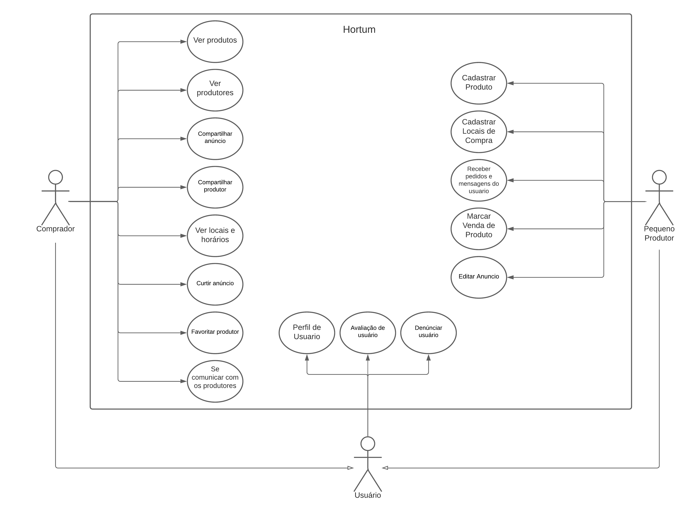
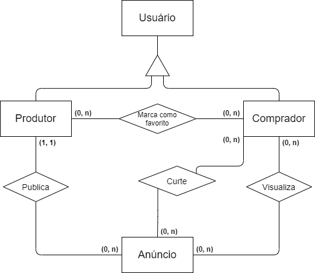
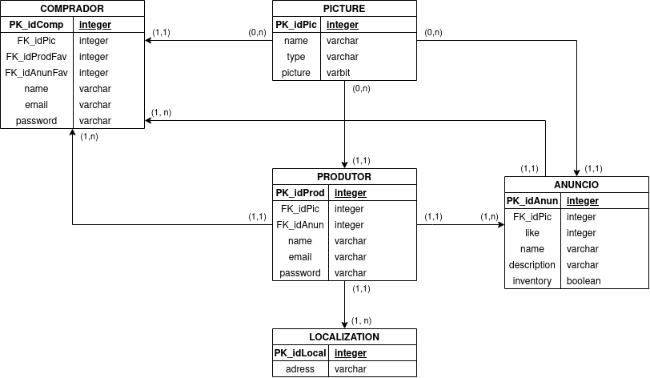

Documento de Arquitetura de Software
Histórico de Revisão
| Data | Versão | Descrição | Autor |
|---|---|---|---|
| 13/02/2021 | 1.0 | Abertura do Documento | João Pedro |
| 15/02/2021 | 1.0.1 | Padronização de Documento | João Pedro |
| 17/02/2020 | 1.1 | Adição do tópico Representação Arquitetural | Victor Lima |
| 19/02/2021 | 1.1.1 | Padronização de Wiki | Carlos Eduardo e João Pedro |
| 21/02/2021 | 1.2 | Refatoração do tópico 2 e adição do tópico 3 | João Pedro e Matheus |
| 22/02/2021 | 1.3 | Adição de links na parte de referências | João Pedro e Matheus |
| 01/03/2021 | 1.4 | Adição do tópico 4 | João Pedro e Matheus |
| 08/03/2021 | 1.5 | Adição do tópico "Visão de Casos de Uso" | Brenno e Matheus |
| 09/03/2021 | 1.6 | Adição do tópico 5 | Carlos Eduardo e Lucas |
| 13/03/2021 | 1.6.1 | Correção de erros na digitação | Lucas Braun |
1. Introdução
1.1 Finalidade
O Seguinte documento tem como finalidade mostrar e esclarecer de uma forma geral a arquitetura utilizada no projeto, tornando o seu processo de entendimento o mais simples possível. Além disso, esse documento também tem como objetivo demonstrar as decisões arquiteturais tomadas pelo grupo em relação ao projeto.
1.2 Escopo
Esse documento visa permitir ao leitor se informar sobre a arquitetura utilizada no projeto, incentivando um entendimento mais simples e eficaz acerca do produto.
1.3 Definições, Acrônimos e Abreviações
| Abreviação | Significado |
|---|---|
| MDS | Métodos de Desenvolvimento de Software |
| UnB | Universidade de Brasília |
| DRF | Django REST Framework |
| ORM | Object-relational Mapping |
| MVT | Model-View-Template |
| MVC | Model-View-Controller |
1.4 Visão Geral
Esse documento de arquitetura se encontra dividido em tópicos que descrevem os detalhes do software desenvolvido. Se organiza da seguinte forma:
- Introdução: Fornece uma visão geral e introdutória sobre o documento;
- Representação Arquitetural: Fornece informações sobre as tecnologias e os motivos pelos quais elas foram escolhidas;
- Metas e Restrições: Demonstra as metas e restrições aplicadas no projeto;
- Visão de Dados: Representa a arquitetura implementada no banco de dados;
2. Representação Arquitetural
2.1 Back-end
2.1.1 Django REST Framework
Representational State Transfer ou REST, representa um conjunto de princípios e definições necessários para a criação de um projeto seguindo boas práticas e com interfaces bem definidas. O DRF então, é um framework do framework Django que permite a criação simples, ágil, poderosa e flexível de API's Web.
2.1.2 Django
Django é um framework web de alto nível baseado em Python que preza pelo rápido desenvolvimento com um design limpo e pragmático. Um dos motivos pela escolha desse framework como back-end se dá pelo fato da linguagem de desenvolvimento utilizada pelo Django ser de grande interesse dos integrantes do grupo, bem como sua crescente utilização do mercado de trabalho e sua interessante curva de aprendizado.
Além disso o framework dispõe de bastante segurança através da utilização da técnica de Mapeamento objeto-relacional (ORM) que realiza queries sem se utilizar de código SQL para acesso ao banco de dados, útil para o grupo que possui poucos conhecimentos sobre Sistema de Banco de Dados.
Outro ponto de interesse no framework se diz respeito da utilização do padrão Model-View-Template, modelo esse baseado no Model-View-Controller. O MVT, ao contrário do MVC, conta com as funções da Controller disponibilizados pelos outros módulos e o acréscimo da Template.
- Model: Camada responsável pelo acesso ao banco de dados.
- View: Camada responsável por processar requests de usuários e retornar responses.
- Template: Camada responsável pela apresentação de informações ao usuário.
2.2 Front-End
2.2.1 Flutter
O Flutter é um framework desenvolvido pela Google na linguagem Dart e permite que sejam criadas aplicações nativas para os aparelhos iOS e Android. Por ter essa facilidade de desenvolvimento para dois sistemas diferentes, a linguagem tem crescido bastante e tornado cada vez maior a quantidade de informação para aprendizado.
Além disso, por ser uma linguagem que possui uma curva de aprendizado muito boa e alguns dos integrantes do grupo já terem conhecimento prévio relacionado à linguagem, ela foi selecionada para atuar no front-end.
Outro ponto importante na escolha desse framework se deve ao fato do Dart ser otimizado bem como ser especializado para criação de interfaces para usuários através do uso dos widgets (estrutura baseada no React). Assim também, o uso de Blocs permite que o software seja dividido em questão de interface de usuário e regras de negócio, e o uso de Stream permite eventos assíncronos no aplicativo.
2.3 Banco de Dados
2.3.1 PostgreSQL
O PostgreSQL é um banco de dados poderoso, open source e objeto-relacional que faz o uso e extensão da linguagem SQL. Por sua robustez, confiabilidade, integridade de dados e dedicação na comunidade open source essa ferramenta tem crescido muito no mercado de trabalho, por esses motivos esse banco de dados foi escolhido para o projeto.
3. Metas e Restrições
3.1 Metas
O projeto visa facilitar a divulgação dos produtos de pequenos produtores rurais bem como a comunicação com possíveis compradores, através de um aplicativo online e de fácil utilização.
3.2 Restrições
3.2.1 Compatibilidade
- O aplicativo será compatível com os aparelhos celulares que possuem o sistema operacional Android e tem acesso à Play Store, bem como é necessário o acesso à internet.
3.2.2 Usabilidade
- O sistema visa ser intuitivo e de simples uso, evitando assim que a utilização não seja um empecilho.
3.2.3 Confiabilidade
- A aplicação buscará obter ao menos 90% de cobertura em testes, garantindo assim a funcionalidade do sistema.
4. Visão de Casos de Uso
4.1 Atores
4.1.1 Usuário
Ator que compartilha as ações de produtor e comprador.
4.1.2 Pequeno Produtor
Especialização de usuário que compreende funcionalidades relacionadas ao anúncio e gerenciamento de produtos.
4.1.3 Comprador
Especialização de usuário que abrange as funcionalidades de visualização e compartilhamento de produtos e produtores, além de favoritá-los e/ou curti-los.
4.2 Diagrama de Casos de Uso

5. Visão de Implementação
5.1 Banco de Dados
Para desenvolver e instanciar o banco de dados do projeto, foi pensado quais seriam as entidades do sistema e seus atributos, além de como se relacionariam, ou seja, suas cardinalidades.
5.1.1 Entidades
- Usuário
- Comprador
- Produtor
- Anúncio
- Imagem
- Localização
O usuário pode ser tanto um comprador quanto um produtor, que necessita de autenticação para acessar algumas áreas do aplicativo.
5.1.2 Atributos
Todos os Usuários irão ter email, nome e senha, sendo o email e senha usados para acessar a conta e nome para reconhecimento.
Os Compradores e Produtores poderão cadastrar uma foto de perfil.
Um Anúncio poderá ter uma ou várias fotos cadastradas, para identificar e mostrar os produtos do anúncio.
Um Anúncio terá em seu cadastro número de likes, um nome, descrição e se há ou não estoque.
O Produtor terá a possibilidade de adicionar uma ou mais localizações.
5.1.3 Relacionamentos
Um Comprador ou Produtor poderá ter foto de perfil ou não, mas uma foto pertence a apenas 1 Comprador ou Produtor. Cardinalidade(0,n)
Um Anúncio pode ser curtido por vários Compradores ou nenhum, e o Comprador pode curtir vários Anúncios ou nenhum. Cardinalidade(0,n)
Um Comprador pode favoritar vários Produtores, e um Produtor pode ser favoritado por vários Compradores. Cardinalidade(0,n)
Um Produtor pode possuir vários Anúncios, mas um Anúncio pertence a apenas 1 Produtor. Cardinalidade(1,n)
Um Anúncio pode ter nenhuma foto ou várias, mas cada foto pertence a apenas 1 Anúncio. Cardinalidade(0,n)
Um Produtor pode ter várias localizações, mas cada localização pertence a apenas 1 Produtor. Cardinalidade(1,n)
5.2 Diagrama Entidade-Relacionamento (DER)

5.3 Modelo Entidade-Relacionamento (MER)

Referências
About PostgreSQL. Disponível em: < https://www.postgresql.org/about/ > Acesso em 01 de Março de 2021
BloC Flutter Documentation. Disponível em: < https://www.flutterparainiciantes.com.br/gerenciamento-de-estado/bloc > Acesso em 24 de Fevereiro de 2021
Como documentar a arquitetura de software. Disponível em: < http://www.linhadecodigo.com.br/artigo/3343/como-documentar-a-arquitetura-de-software.aspx > Acesso em: 13 de Fevereiro de 2021
Django Documentation. Disponivel em: < https://docs.djangoproject.com/en/3.1/ > Acesso em: 22 de Fevereiro de 2021
Documento de arquitetura Acácia. Disponível em: < https://fga-eps-mds.github.io/2019.2-Acacia/#/architecture_document > Acesso em: 13 de Fevereiro de 2021
Documento de arquitetura VCU. Disponível em: < https://fga-eps-mds.github.io/2020.1-VC_Usuario/#/docs/Documento_de_Arquitetura > Acesso em: 13 de Fevereiro de 2021
Flutter Documentation. Disponível em: < https://flutter.dev/docs > Acesso em: 24 de Fevereiro de 2021
Quickstart - Django REST framework. Disponivel em: < https://www.django-rest-framework.org/tutorial/quickstart/ > acesso em: 22 de Fevereiro de 2021
TEMPLATE Documento de Arquitetura de Software. Disponível em: < https://github.com/DroidFoundry/DroidMetronome/wiki/TEMPLATE-Documento-de-Arquitetura-de-Software > Acesso em: 13 de Fevereiro de 2021